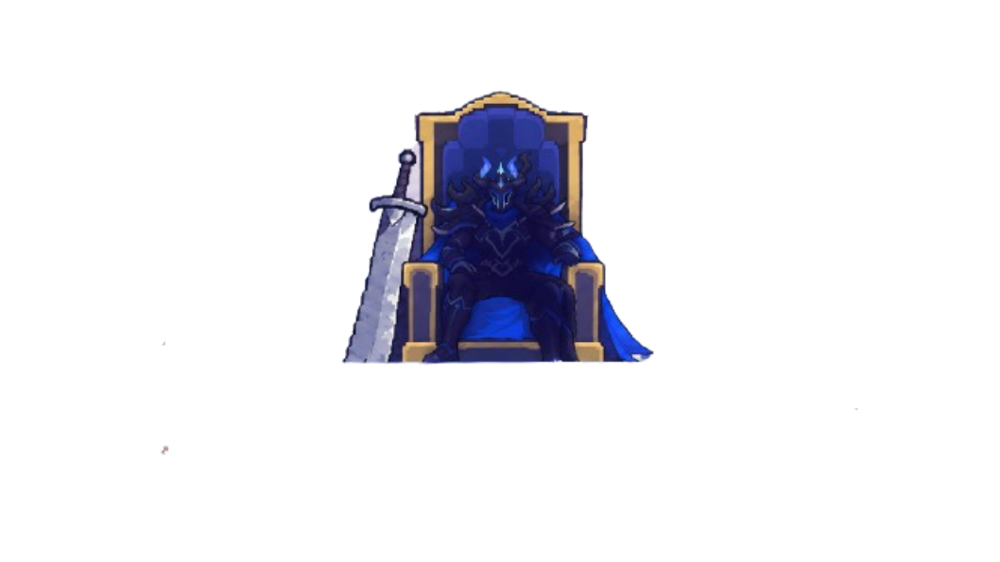
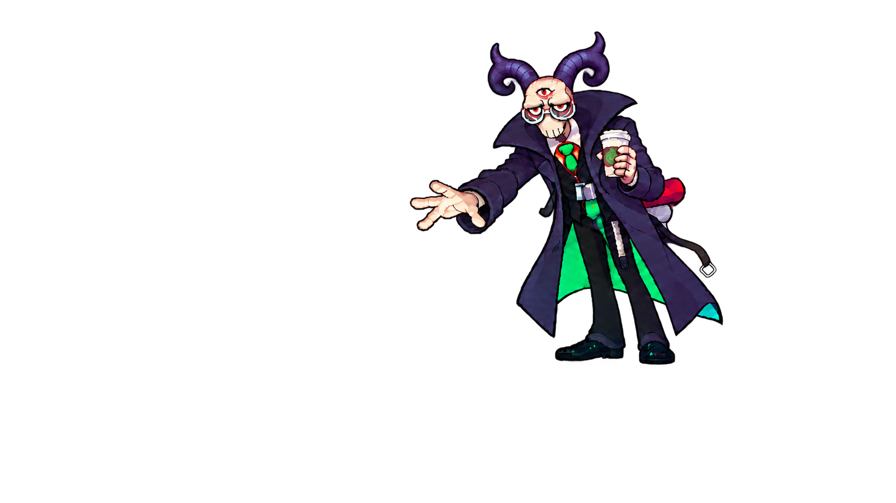

어떤 시작이 좋을까요?
세 가지 인트로를 직접 비교해 보세요.
어느 안을 선택해도 커피 유령의 미용·야차 튜토리얼로 이어집니다.

1안PT에서 한 번에
배경 이야기부터 미용실의 목표까지
하나의 발표로 이어집니다.

2안미용실에서 이어서
소환 이야기 뒤 스크린이 올라가고,
미용실에서 다섯 컷으로 목표를 설명합니다.
3안
채택!
목표 설명 뒤, 야차 예고
PT에서 목표까지 설명한 뒤,
미용실에서 미용의 자유와 야차 가능성을 소개합니다.
F 대사 진행 · A/D 선택 · F 확정 · Space 길게 눌러 인트로 건너뛰기
2안·3안의 커피 유령 동작은 연출 비교를 위한 임시 시안입니다.